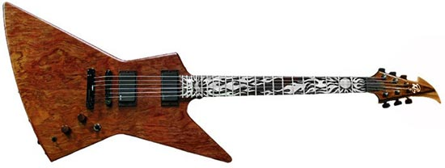
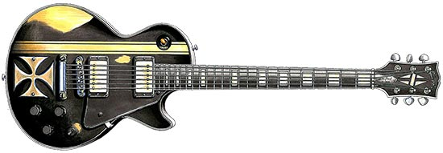
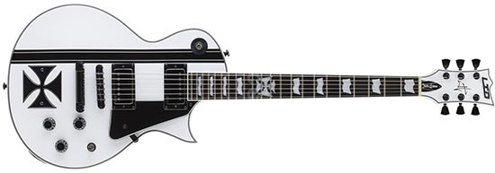
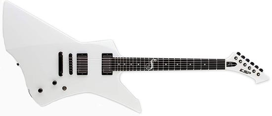
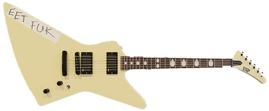
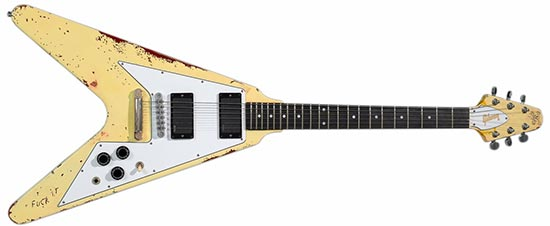

Ken Lawrence Explorer, aka “Carl”
- Finish - Natural with Custom Details
- Years Used - 2012 to Present
And we’ll start things off with one rather sentimental instrument built for James by Ken Lawrence. Back in the late 1990s and the early 2010s, Metallica considered actually buying an old garage where they used to rehearse in the early 1980s. Although they found out that the garage was demolished, they got ahold of some old wood that was, for some reason, kept by one of their friends.
Being a very thorough guitar builder, Ken took his time to finish it up. Some pretty nice aesthetic touches on this Explorer were done by Serbian artist Petar Milivojević and they actually tell some stories about Metallica history. The body is accompanied by a mahogany neck and an African Blackwood fretboard. The nickname “Carl” is a reference to Carlson Blvd in El Cerrito, California where their old rehearsal place was located. This is also known as the James Hetfield garage guitar.
1996 Custom Ken Lawrence Explorer
- Finish - Natural
- Years Used - 1996 to Present
But Hetfield’s cooperation with Ken goes way back to the mid-1990s. The first instrument he built for him was a pretty-looking explorer with a mahogany body, mahogany neck, and a unique-looking headstock. It was initially fitted with EMG 81 and 60 active humbucker pickups, although he later swapped them with his signature EMG-JH humbuckers.
However, James has at least two of these Explorers. He got the second one in the early 2000s, and this instrument features a Bubinga top, as well as some rather stylish fretboard inlays. You can see him using this second one on a lot of Metallica’s live shows, so it has seen a lot of action over the years. This was during the band’s “Load” and “Reload” era, which was met with somewhat mixed reactions from the fans but saw James utilize different sounds and techniques compared to the group’s full-on thrash metal period of the 1980s. When most people ask what guitar does James Hetfield plays one of his explorer styles guitars, such as this Ken Lawrence model, comes to mind.
1973 Gibson Les Paul Custom
- Finish - Black Worn with Custom Details
- Years Used - 2002 to Present
Being a metal musician, it’s only expected of James to have some Gibsons in his collection. One of the most interesting guitars, though, is the 1973 Les Paul Custom. It’s not sure when and where he got it, but the instrument came with Sperzel locking tuners, EMG 81 and 60 pickups, and golden covers. It’s easily recognizable with its Maltese cross behind the bridge and golden stripes on the bass side of the body. This one has been used heavily during the “St. Anger” era. Gibson Les Pauls are generally associated with later Metallica stages as far as Mr. Hetfield is considered.
ESP James Hetfield Iron Cross
- Finish - White
- Years Used - 2017 to Present
Over the years, James became quite fond of ESP guitars. So he got his own special custom-made guitar with them. This ESP model in particular is a James Hetfield signature guitar. The Iron Cross model was inspired by the aforementioned Gibson Les Paul Custom from 1973. Taking a look at the body, it looks pretty similar, though the “Iron Cross” visual is a bit different. Then we have an obviously different fretboard design with ESP’s famous “flag” inlays, as well as a Maltese cross inlay on the 12th fret. The guitar is also loaded with active pickups. ESP and ESP LTD both produce James Hetfield signature models that are made after this instrument. This is one of the more well-known guitars of James’ modern Metallica arsenal.
ESP James Hetfield Snakebyte
- Finish - White
- Years Used - 2015 to Present
The Snakebyte is another James Hetfield signature guitar. Knowing how fond James is of Explorer guitars, it’s not a surprise to see him using a bunch of different variations to this classic body shape. However, he has a few very interesting ESP Snakebyte guitars that were made especially for him. One of them is a plain white model with no special insignia on it. It’s not certain when he began using this particular one, but it’s most likely during the mid-2010s. This is a classic heavy metal-oriented instrument, bearing a mahogany body, mahogany neck, ebony fretboard, and a pair of EMG James Hetfield signature humbuckers. Along with the Ken Lawrence models, this is another explorer style guitar that comes to mind when the question is asked, what guitar does James Hetfield use?
ESP MX220, aka “Eet Fuk”
- Finish - White
- Years Used - 1987 to Present
One of the most famous instruments in James Hetfield’s collection is the ESP MX220 with a white finish and a rather unusual “EET FUK” caption on it. Getting this white Explorer-shape ESP guitar back in 1987, right before the recording of “…And Justice for All,” the caption was added sometimes in 1988.
Once again, we have a regular combo of a mahogany body and a mahogany set-in neck, as well as a rosewood fretboard with middle finger inlays. It became his go-to guitar during this period. “EET FUK” ESP Explorer also features a pair of EMG humbuckers, 81 and 60 models, which is quite common for James’ guitars. This instrument is associated with Hetfield’s roaring, the crunch-driven sound of the band’s thrash metal peak demonstrated on the “…And Justice for All Tour,” recorded at the iconic 1989 live show in Seattle, WA.
Electra 2236 Flying V
- Finish - White
- Years Used - 1980 to 1984/2008 to present
For this instrument, we need to go all the way back to 1980, which is even before Metallica was formed. Back then, James bought a Gibson Flying V copy by Electra, the company’s 2236 model. Reportedly, he paid it $200 back then. Although relatively cheaper alternatives back in the day, these instruments are rare and they became popular among collectors due to James Hetfield.
Hetfield used it on the “Kill ‘Em All” debut album and it stayed his main workhorse until 1984 when he managed to snap its neck during a live show. The instrument was restored to a fully functioning state back in 2008. The instrument used to have Seymour Duncan Invader pickups, but he swapped them for the EMG 81 and 60 set. This guitar is a true deep-cut gem in James’ collection and an item many hardcore fans are fascinated with.
1984 Gibson Explorer, aka “So What”
- Finish - White
- Years Used - 1984 to present
Right after he managed to snap the neck on his precious Electra, James started experimenting with different guitars. Finally, he settled for a 1984 Gibson Explorer that became popular for its “So What” sticker. Back when he got this instrument, it was fitted with Gibson’s 496R and 500T humbuckers.
Later during the 1980s, most likely in 1987, James swapped them for a standard pair of EMG 81 and 60 pickups. The instrument in its original setting saw heavy use on the “Ride the Lightning” record. In 2008, this instrument was completely restored, just like the Electra Flying V.